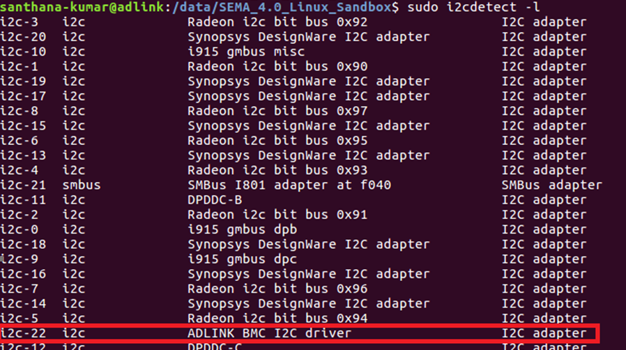

Provide an interface to access I2C devices. Please refer to the Hardware User Manual to check how many i2c interfaces which supported on your products
Note: Only available with Tiva BMC and can’t be supported on Renesas BMC.
How to use in Linux
After adl-bmc-i2c driver loaded, please use i2cdetect command to look for ADLINK BMC I2C driver. Then, you can use i2c-tools commands to access your devices.

Note: please refer to here to guide you how to use i2c-tools command
| command | Description |
|---|---|
| i2cdetect | detect I2C chips |
| i2cdump | examine I2C registers |
| i2cget | read from I2C/SMBus chip registers |
| i2cset | set I2C registers |
List of SEMA EAPI (Only for Windows)
uint32_t EApiI2CGetBusCap(uint32_t Id, uint32_t *pMaxBlkLen) |
Description
Returns the capabilities of the selected I2C bus.
Parameters:
uint32_t Id:
Select i2c Bus ID as the first parameter
| ID | Description |
| —————————— | ———————————- |
| EAPI_ID_I2C_EXTERNAL | Baseboard I2C Interface |
| EAPI_ID_I2C_LVDS_1 | LVDS/EDP 1 Interface |uint32_t *pMaxBlkLen:
Size in bytes, pointer to a buffer that receives the maximum transfer block length for the given interface. Note that care must be taken if used in combination
withEapiI2CWriteTransferas the maximum data payload length will be pMaxBlkLen (write overhead). For example, a 7-bit addressed device with extended command has a write overhead of 2 bytes which are command.
Note: Max length of data byte to write is 29 Bytes; Max length of data byte to read is 32 Bytes
uint32_t EApiI2CProbeDevice(uint32_t Id, uint32_t Addr) |
Description
Probes I2C address to test I2C Device present
Parameters:
uint32_t Id:
Select i2c Bus ID as the first parameter
| ID | Description |
| —————————— | ———————————- |
| EAPI_ID_I2C_EXTERNAL | Baseboard I2C Interface |
| EAPI_ID_I2C_LVDS_1 | LVDS/EDP 1 Interface |uint32_t Addr:
Encoded 7 bit I2C device address
uint32_t EApiI2CGetBusSts(uint32_t Id, uint8_t *sts) |
Description
Gets current status of the I2C bus.
Parameters:
uint32_t Id:
Select i2c Bus ID as the first parameter
| ID | Description |
| —————————— | ———————————- |
| EAPI_ID_I2C_EXTERNAL | Baseboard I2C Interface |
| EAPI_ID_I2C_LVDS_1 | LVDS/EDP 1 Interface |uint8_t *sts:
This describes the definition of I2C bus status:
| Bit | Description |
| ——- | —————————————————————————————— |
| Bit 7 | I2C_MASTER_ERR_CLK_TOUT
No Error = 0
Clock Timeout Error = 1 |
| Bit 6 | reserved |
| Bit 5 | I2C Transaction timeout
- No error = 0
- Transaction timeout error = 1 |
| Bit 4 | I2C_MASTER_ERR_ARB_LOST
- No error = 0
- Arbitration error = 1 |
| Bit 3 | I2C_MASTER_ERR_DATA_ACK
- No error = 0
- Data acknowledge error = 1 |
| Bit 2 | I2C_MASTER_ERR_ADDR_ACK
- No error = 0
- Address acknowledge error = 1 |
| Bit 1 | I2C Transaction result
- Transaction ok = 0
- No data send/received = 1 |
| Bit 0 | I2C Bus status
- I2C transaction ongoing = 0
- I2C bus is free = 1 |
uint32_t EApiI2CReadTransfer( |
Description
Reads from a specific register in the selected I2C device. Reads from I2C device at the I2C address Addr the amount of ByteCnt bytes to the buffer pBuffer while using the device specific command Cmd. Depending on the addressed I2C device Cmd can be a specific command or a byte offset.
Parameters:
uint32_t Id:
Select i2c Bus ID as the first parameter
| ID | Description |
| —————————— | ———————————- |
| EAPI_ID_I2C_EXTERNAL | Baseboard I2C Interface |
| EAPI_ID_I2C_LVDS_1 | LVDS/EDP 1 Interface |uint32_t Addr:
Encoded 7 Bit I2C Device Address.
uint32_t Cmd:
Encoded I2C Device Command / Index.
void *pBuffer:
Pointer to a buffer that receives the read data. This parameter can be NULL if the data is not required
uint32_t BufLen:
Size, in bytes, of the buffer pointed to by the pBuffer parameter. If the buffer specified by pBuffer parameter is not large enough to hold the data, the function returns the value
EAPI_STATUS_MORE_DATAuint32_t ByteCnt:
Size in bytes of data to be read
uint32_t EApiI2CWriteTransfer( |
Description
Write to a specific register in the selected I2C device. Writes to an I2C device at the I2C address Addr the amount of ByteCnt bytes from the buffer *pBuffer while using the device specific command Cmd. Depending on the addressed I2C device Cmd can be a specific command or a byte offset.
Parameters:
uint32_t Id:
Select i2c Bus ID as the first parameter
| ID | Description |
| —————————— | ———————————- |
| EAPI_ID_I2C_EXTERNAL | Baseboard I2C Interface |
| EAPI_ID_I2C_LVDS_1 | LVDS/EDP 1 Interface |uint32_t Addr:
Encoded 7 Bit I2C Device Address.
uint32_t Cmd:
Encoded I2C Device Command / Index.
void *pBuffer:
Pointer to a buffer that receives the read data. This parameter can be NULL if the data is not required
uint32_t ByteCnt:
Size, in bytes, of the information pointed to by the pBuffer parameter
uint32_t EApiI2CWriteReadRaw( |
Description
Universal function for read and write operations to the I2C bus. Refer to PICMG EAPI 1.0
Parameters:
uint32_t Id:
Select i2c Bus ID as the first parameter
| ID | Description |
| —————————— | ———————————- |
| EAPI_ID_I2C_EXTERNAL | Baseboard I2C Interface |
| EAPI_ID_I2C_LVDS_1 | LVDS/EDP 1 Interface |uint32_t Addr:
Encoded 7 Bit I2C Device Address.
void *pWBuffer:
Pointer to a buffer containing the data to be transferred. This parameter can be NULL if the data is not required
uint32_t WriteBCnt:
Size, in bytes, of the information pointed to by the pWBuffer parameter plus 1 If pWBuffer is NULL this must be zero or one.
void *pRBuffer:
Pointer to a buffer that receives the read data. This parameter can be NULL if the data is not required.
uint32_t RBufLen:
Size, in bytes, of the buffer pointed to by the pRBuffer parameter. If the buffer specified by pRBuffer parameter is not large enough to hold the data, the function returns the value
EAPI_STATUS_MORE_DATAIf pRBuffer is NULL this must be zero.uint32_t ReadBCnt:
Size, in bytes, to be read to pRBuffer plus 1. If pRBuffer is NULL, this must be zero or one.